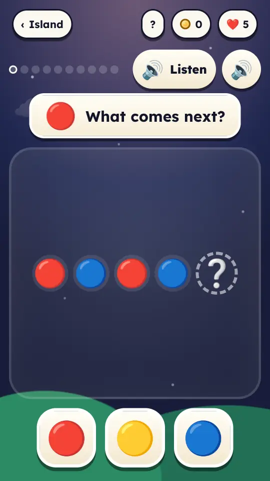

All labs › Maths › Pattern Beads
Maths lab · Gauri's Garden
Pattern Beads
मोतियों के पैटर्न · आगे क्या आएगा?
Look at a string of beads and choose what comes next in the pattern.
- Maths
- Explorer · ages 4–7
- 10 levels
- English · हिंदी
- Free, no sign-up

How it works
Carry on the pattern
- Look at the beads from left to right.
- Find what repeats: red, blue, red, blue.
- Tap the picture that comes next.
Explorer labs read instructions aloud, and a wrong try never costs anything.
Why it works
The big idea
A pattern is like a song chorus that repeats: once you hear which part repeats, you can sing what comes next.
What children learn
Skills in this lab
- Spotting repeating patterns
- Predicting what comes next
- Colours and shapes
For parents and teachers
This lab is in the Explorer band (ages 4–7). Each player picks a band, and sees only the labs made for it.
Curio Island is free in the browser with no sign-up. Progress is saved on this device only. Ads are child-safe and non-personalised, and never appear inside a lab.
Part of Gauri's Garden on the island. 10 levels to finish.